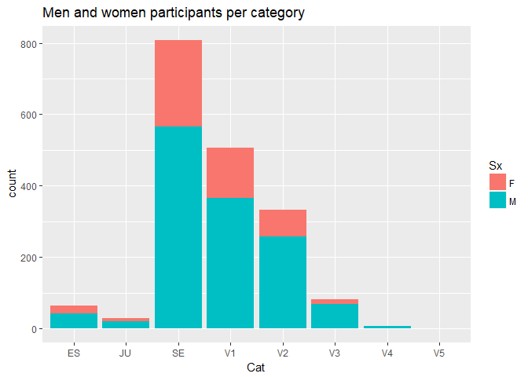
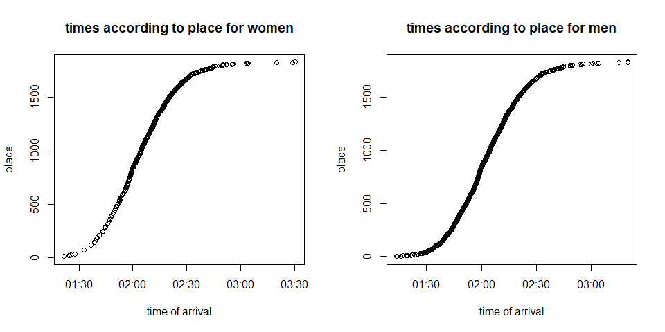

Hi everyone!
I ran my first half marathon this spring and wanted to talk about my experience. I also analyzed the results of the race which I found on the Grenoble-Vizille website, so scroll down if you want to only look at the data science part of this article. I’ve only been running regularly for a year, and I’d been dreaming about this day since I started. It was still kind of a dream for the longest time, something that I wanted but was still only a concept until the day arrived and I realized: “I’m running a half marathon today. This is crazy!“. The Grenoble-Vizille half marathon is not a small event, but it’s not huge either. It is a course that starts in Grenoble, where I live, and ends up at the Vizille Chateau, a beautiful museum about the french revolution with wonderful grounds full of swans. Because it took place on the 1st of April, most people had costumes, it was really cool. Around us at the start line were the entire Asterix and Obelix character set, including a few romans. So many people watched us run from their windows, shouting more or less insane things like “it’s almost over” as we crossed the 5 first km in the towns of Grenoble, then Eybens. I always run with my friend Marie, we started together and are each other’s motivation. She is much faster than me, especially when the climbs start, she is amazing. But she always runs the first few km with me at my pace, and we talked for a while until I got the worst stitch. I wanted to stop for a minute to recover but felt like it would look really foolish at km 2 of a half marathon… so she continued talking and I breathed through it. Then she sped ahead in the climb. I eventually always end up running alone in races because I’m usually at the back and everyone has passed me, but this time there were so many people, that I was actually surrounded, which was new for me, and motivating. On my left a daughter was cursing at her father for asking her to come run the race with him, it was hilarious. On the course there were many people encouraging us, there were bands playing music, children in costumes dancing around and screaming at us, or handing their hand out for high fives.
The course was beautiful, the mountains around us looked majestic. It was not very sunny, it even drizzled a bit near Eybens. It was not too warm either, and I was glad I had my light jacket. I took a few clips with my new gopro, but I didn’t want to film other people too much so I held it close to me, and the shots are not great, but I will learn to use it eventually.
Marie’s mom is the best, and she gave us my favorite snack when running, “pâte de fruit”, and those were so delicious that it got me through some of the difficult last 5 km when I had stomach cramps and my hip felt very painful. I admit though I did stop to stretch it, and even walked for half a km because I was not feeling well.
I usually sprint a bit at the end because I probably don’t push enought the rest of the time^^ But this time I really couldn’t, I just held on till the finish line, that’s all I could manage. I wanted to cross it running rather than walking, and when I saw Marie she yelled at me, her face all shiny, and ran beside me the last 100 meters. After that we sat there for a while, stretching a bit, complaining about pain more, until we were freezing and we went to get some food. We had to wait for the bus to go home and grab lunch, and almost fell asleep because we were so tired!
When I got home I just sat in the middle of the living room and and complained until my friends brought me food, because I could not move anymore. I could not walk properly for two days after that because my hip caused me so much pain. And then it got better, and I was fine and went running shortly after that.
It was such a fun experience, if you get the chance to run this half marathon, I highly recommend it! It has a bit of a climb in the middle, 280m elevation in one go. I think the hardest part of this race is that it’s on road only, which is what caused my hip pain. If it was more on trails it would be perfect. But the volunteers where the nicest, and the organisation was very smooth from an outside point of view. The only thing I disliked besides the road, is that the prize ceremony takes place too early for me to get back in time, and I missed it, and I always enjoy clapping for the winners…
Training-wise, I had kind of a plan, which I did not follow at all. I don’t like pain, so I don’t want to do hill repeats, and fast-pace training, and I don’t build the muscles I need to… But I should, and I will try to do it for the next races, because I want to get better. I think it’s ok to do what you feel like, because it’s your race, it’s your life, and running is not the only thing in it. There is still so much time to get better, let’s not suck all the fun from it, otherwize it’s not sustainable. So if you are preparing a race like that and feel unprepared, just go and have fun. What I did to stop stressing over it is I went for a very slow pace half marathon one week before the event, on trails, testing the nutrition, the clothes I wanted to wear. It put my mind to rest when I was able to do the full distance, even if it took me much more time then I originally had planned. If you’re hesitating to race because of your speed or because you feel like you haven’t trained enough, just go for it, it’s so worth it to do something you thought you were not capable of!
Grenoble-Vizille half marathon, I’ll see you next year, this was too fun to miss the next edition! In the mean time I have many more races planned this season.
Now, let’s do a bit of science, and look at the data from the results of the solo race (there was also a relay which I am ignoring here).
I am getting to learn how to use awk, I am terrible at it for now, and hope that it will get better soon. So I had to process some of the data by hand, removing where there were missing data, because unfortunately it had a lot of inconsistencies in it so I removed everything that bothered me.
Congrats to the first ten men on the finish line, you guys are so damn fast!
There are 1829 total people who ran the half marathon and crossed the finish line according to my data. There were 504 women constituting 27.5560416 % of all runners and 1325 making up the remaining 72.4439584 %. I actually heard an old woman spectating making the comment “there are lots of women here!” as I was passing by. And even though we’re a little way from 50⁄50, the percentage of women racing is increasing year after year. It reminds me of a comment from Laz, the director of the Barkley Marathons, reportedly saying “it’s the year of women”, even though the percentages were far from equal. This next graph shows the difference pretty clearly as well as giving us the numbers per category:

The category with most runners is as always the Senior catagory (my category actually). There were also a lot of Veteran 1 and 2 (category also called Master in some races I’ve attended). The categories that also gain more participants recently are the Espoir and Junior categories, for the youger runners. Same for the opposite side with veterans 3, 4 and 5. Now I want to look at the summary of the times (mean, minimum, maximum, etc.):
## [1] "Overall times summary"
## Min. 1st Qu. Median Mean 3rd Qu. Max.
## 01:13:24 01:50:04 02:02:07 02:03:38 02:15:16 03:30:19
## [1] "Overall times summary for women"
## Min. 1st Qu. Median Mean 3rd Qu. Max.
## 01:21:31 02:03:05 02:13:25 02:14:29 02:23:46 03:30:19
## [1] "Overall times summary for men"
## Min. 1st Qu. Median Mean 3rd Qu. Max.
## 01:13:24 01:46:48 01:57:58 01:59:30 02:10:09 03:19:56
Now I want to do a plot similar to the one I did for ice skaters which is finish times according to the placement they got when they crossed it:

Again we have a sigmoid plot, just like for ice skaters. Most runners are very grouped up and cross the finish line within seconds of each other, they are the middle part of the plot in the somewhat linear part. After 2:30 the line starts to thin and runners are more sparse until the cutoff of 3:30. And of course there are few runners at the front who are really fast. I want to separate men and women plots to compare:

Men and women plots look very similar but with a little shift. The beginning of the plot (latent and beginning of exponential) has less density of runners in the women plot than in the men’s plot. Also, even the slowest runners are a mix of men and women.
I don’t have time for more so that’s all for now! See you next time=)
Code for the analysis above:
library(ggplot2)
library(readODS)
library(sqldf)
library(knitr)
library(chron)
library(scales)
tbl <- read.ods(file="data_semi_marathon_grenoble_vizille_2018.ods",1)
colnames(tbl) <- tbl[1,]
tbl_df <- data.frame(tbl[2:nrow(tbl),1:9])
kable(head(tbl_df, 10))
ggplot(sqldf("select Cat,Sx from tbl_df"), aes(x=Cat, fill=Sx)) + geom_bar() + ggtitle("Men and women participants per category")
tbl_df_sorted <- tbl_df
j <-1
while(j< (nrow(tbl_df_sorted)-1)){
#print(j)
if(times(tbl_df_sorted$Temps)[j+1] <= times(tbl_df_sorted$Temps)[j]){
tbl_df_sorted$Temps[j+1] <- as.character(times(tbl_df_sorted$Temps)[j] + times("00:00:01"))
}
j<-j+1
}
print("Overall times summary")
summary(times(tbl_df_sorted$Temps))
print("Overall times summary for women")
summary(times(sqldf("select Temps from tbl_df_sorted where Sx='F'")$Temps))
print("Overall times summary for men")
summary(times(sqldf("select Temps from tbl_df_sorted where Sx='M'")$Temps))
plot(as.POSIXct(strptime(tbl_df_sorted$Temps, format="%H:%M:%S")), tbl_df_sorted$Pos, main="times according to place", xlab = "time of arrival", ylab="place")
women_df <- tbl_df_sorted[which(tbl_df_sorted$Sx=='F'),]
men_df <- tbl_df_sorted[which(tbl_df_sorted$Sx=='M'),]
par(mfcol=c(1,2))
plot(as.POSIXct(strptime(women_df$Temps, format="%H:%M:%S")), women_df$Pos, main="times according to place for women", xlab = "time of arrival", ylab="place")
plot(as.POSIXct(strptime(men_df$Temps, format="%H:%M:%S")), men_df$Pos, main="times according to place for men", xlab = "time of arrival", ylab="place")